Desmos
Aquí tenemos a un más que digno competidor para Geogebra, sobre todo en lo que se refiere al tema de funciones. Bueno, tal vez la palabra competidor sea muy fuerte, porque pueden complementarse muy bien.
¿En qué consiste?
Desmos es, esencialmente, una calculadora gráfica diseñada en HTML5, de manera que explota todas sus posibilidades en los navegadores modernos. Sobre esta calculadora, además de actividades ya realizadas por el equipo de Desmos, los docentes pueden crear actividades y modificar otras ya hechas que permiten explorar a los estudiantes y dar sentido a las matemáticas.
Como calculadora gráfica
Accediendo desde la página de Desmos, o directamente en https://www.desmos.com/calculator, podremos utilizar la calculadora gráfica, que es la esencia de esta aplicación.
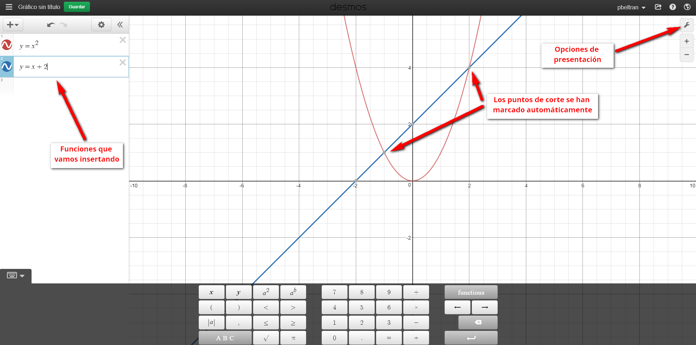No solo podemos añadir funciones, sino que desde el menú de la izquierda podemos insertar otros elementos, tales como texto, imágenes, etc.
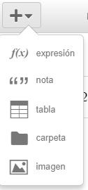
Lanzar actividades en el aula
Desde la web de profesor de Desmos (https://teacher.desmos.com), podemos buscar en su banco de recursos, tanto actividades diseñadas por el equipo de Desmos como aquellas subidas por otros docentes:
Antes de seguir, que nadie se lleve las manos a la cabeza por el hecho de que esté en inglés. Por dos cosas:
- Porque ya hay profesores que están subiendo las actividades traducidas o modificadas por ellos mismos.
- Porque el traductor de Google permite apañarse bastante bien. De hecho, posibilita llevar a cabo estas actividades con grupos de alumnos cuyo nivel de inglés no es alto.La siguiente captura muestra cómo queda la página traducida (para ello, desde Chrome o la mayoría de navegadores basta con hacer click con el botón derecho del ratón y darle a traducir:
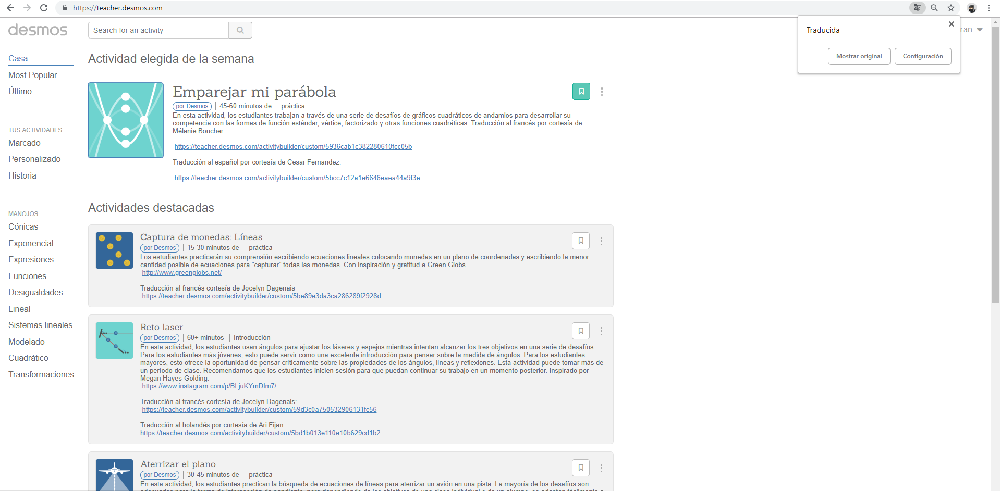
Dinámica general
Mostraremos la dinámica de funcionamiento con una de las más populares y que sirve para introducir y trabajar las coordenadas de un plano cartesiano en dos dimensiones. En el siguiente apartado veremos que muchas de estas actividades podremos modificarlas (por ejemplo, para traducirlas), pero otras, como esta, no. En cualquier caso, nos servirá para nuestros propósitos. Al seleccionarla, veremos algo similar a lo siguiente:
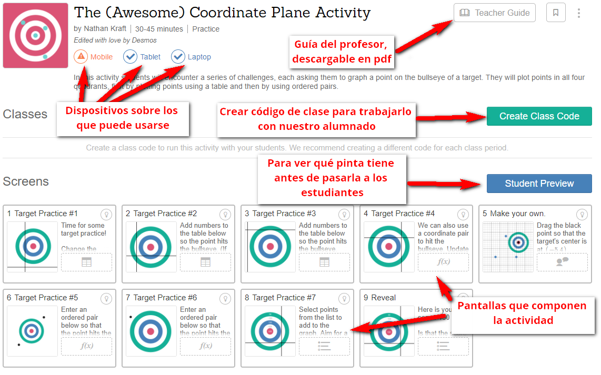
Class code (código de aula)
Esto es realmente lo importante para ponerlo en marcha. De forma similar a otras aplicaciones (pensemos en Kahoot), será el código que pasemos a nuestros alumnos para que entren en la actividad. Haciendo clic en «Create class code» obtenemos dicho código:
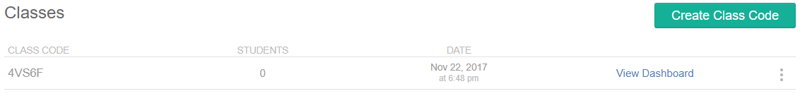Como para cada código podemos acceder a su correspondiente panel de control («dashboard»), con estadísticas y resultados, lo recomendable es crear un código distinto para cada grupo de alumnos o sesión.
¿Cómo entran los alumnos?
Si hacemos clic sobre el código, se abre una pantalla que indica el procedimiento.
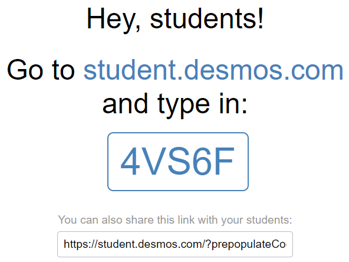
Observaremos que en la parte inferior, también tenemos un enlace directo que podemos mandar por correo. Una vez que inician el procedimiento, a los estudiantes se les da la opción de identificarse, lo cual permite interrumpir el trabajo y volver a él más adelante. Pero es opcional, bastará con poner un nombre o pseudónimo en la pantalla que sale después.
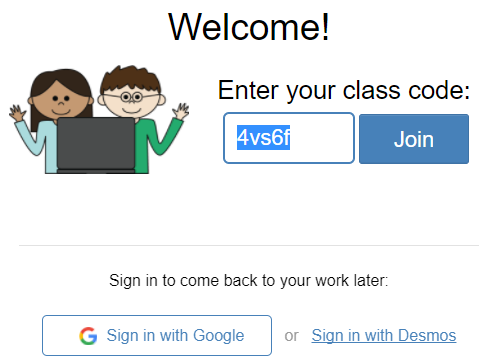
Y ya estarían dentro los alumnos, disfrutando, en este caso, de una bonita sesión de práctica con puntos de coordenadas.
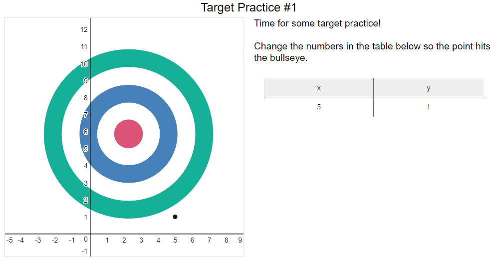
Panel de control
En el panel de control se muestra qué estudiantes lo están realizando y qué respuestas están dando.
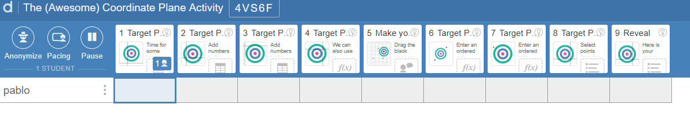
Marcadores de favoritos
Haciendo clic en el símbolo de marcador podremos guardar aquellas actividades que nos resulten de utilidad.
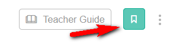
Copiar y editar actividades ya hechas
De momento, salvo que nos descarguemos alguna actividad subida por compañeros en español, está casi todo en inglés (repetimos, el traductor de Chrome funciona bastante bien). Sin embargo, si vemos alguna que se adapte muy bien a nuestras necesidades, podemos copiarla y editarla (copy and edit), cosa que no en todas será posible:
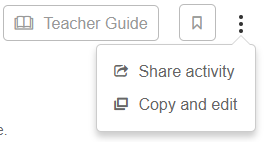
Ejemplo. Traducir un polygraph («quién es quién»)
Un tipo de actividades muy popular en Desmos es el «Polygraph» o polígrafo. Pero creo que nos entenderemos mejor si la llamamos por el nombre por el que la conocemos todos: quién es quién. Tampoco es que sea nueva la idea, pero poder generar juegos de este tipo fácilmente es una maravilla, ya que permiten movilizar mucho vocabulario.
La actividad original está en este enlace: https://teacher.desmos.com/polygraph/custom/560c53f7441172070b262215. Accedemos y, si estamos registrados podremos copiar y editarla. Al hacerlo, veremos la primera pantalla de edición, donde se configuran las tarjetas. 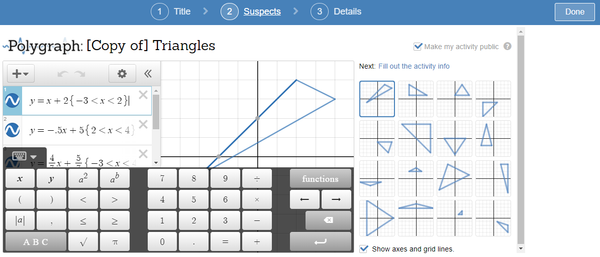Si quisiéramos crear uno nuevo, lo haríamos aquí. Pero como lo que queremos es traducir el texto, hacemos clic en details. Y cambiamos el texto. Una vez hecho, hacemos lo mismo con «Title».
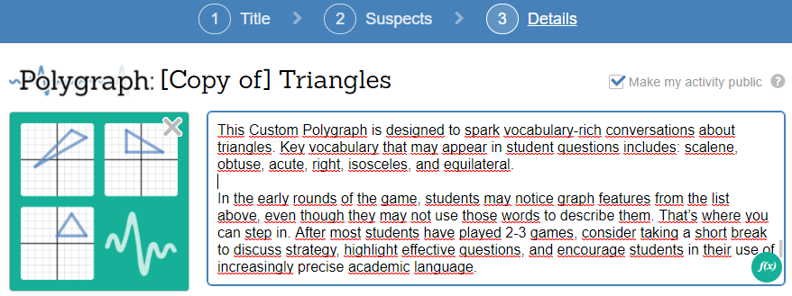El resultado lo vemos en el enlace siguiente: https://teacher.desmos.com/polygraph/custom/5a1591ce8c08800a6023fbbb
Búsqueda de actividades
- Como hemos dicho, desde la propia web de Desmos:
- En este enlace, hay un repositorio de actividades catalogadas por niveles (en general, del sistema educativo estadounidense): https://sites.google.com/site/desmosbank/
Para saber más
Se puede consultar el siguiente enlace donde se describen los tipos de actividades más populares:
Beltrán-Pellicer, P. (2018). Una introducción a los tipos de actividades que podemos encontrar en Desmos. Entorno Abierto, Boletín Digital de la Sociedad Aragonesa «Pedro Sánchez Ciruelo» de Profesores de Matemática, 24, 4-10.